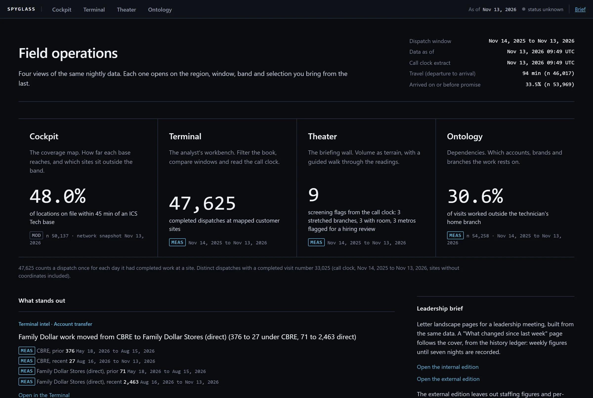

Spyglass
Coverage and operations suite · 2026 · Interior Climate SolutionsFour views of the same nightly data: a coverage map, an analyst's workbench, a briefing wall and a dependency reader. Each one opens on the region, window and selection you bring from the last.

Home. Four views, each introduced by the one number it exists to explain, with what stands out this week underneath.
The rules it is built to
- One grid with 1px gaps over a line-colored shell, so every panel edge is a hard hairline. No rounded cards, shadows or glass.
- Nothing renders under 11px. Density comes from showing fewer things at once, not from shrinking the type.
- Every number says where it came from: measured from the records, or modeled.
- Motion only where a value changed. Nothing loops.
Why it exists
A response-time promise depends on where the technicians are. Spyglass reads a year of service calls against the map of where they can reach.
Sales, operations and leadership each needed a different way in, so it became four views over one set of numbers that always agree.
How it was made
- Role
- Design, direction and review. I wrote the design rules and the contract for each page; Claude and Codex agents wrote most of the code against them.
- Front end
- Plain HTML, CSS and ES modules with deck.gl for the maps. No framework and no build step.
- Data
- A Python pipeline that turns the dispatch records into static files each night.